Code
suppressPackageStartupMessages({
library(quantmod); library(zoo); library(xts)
library(tidyverse); library(forecast); library(tseries)
library(ggplot2)
})In this analysis, we investigate the relationships between cryptocurrency markets (Bitcoin), traditional equity markets (S&P 500), market volatility (VIX), and macroeconomic indicators (CPI). Understanding these relationships is crucial for portfolio diversification, risk management, and forecasting in modern financial markets.
Financial markets exhibit complex interdependencies that have evolved significantly with the emergence of cryptocurrency markets. According to Nakamoto (2008) and subsequent cryptocurrency research, Bitcoin was designed as a decentralized alternative to traditional fiat currencies. However, empirical studies by Baur & Dimpfl (2018) show that Bitcoin increasingly behaves like a traditional financial asset, responding to macroeconomic and market conditions.
The S&P 500 serves as a broad measure of U.S. equity market performance and overall economic health. Research by Corbet et al. (2018) demonstrates significant spillover effects between traditional equity markets and cryptocurrency markets, particularly during periods of market stress. During the COVID-19 pandemic, both Bitcoin and the S&P 500 experienced simultaneous crashes, suggesting increasing correlation.
The VIX (CBOE Volatility Index), often called the “fear gauge,” measures expected market volatility. Studies by Whaley (2009) establish the VIX as a leading indicator of market sentiment. Recent research by Smales (2019) shows that Bitcoin exhibits increased correlation with traditional markets during high-volatility periods, suggesting that market fear affects all asset classes. The inverse relationship between VIX and S&P 500 is well-documented, with VIX typically rising when stock prices fall.
The U.S. Dollar Index (USD) summarizes the value of the U.S. dollar against a basket of major currencies. Dollar strength is linked to global risk sentiment and capital flows. A stronger dollar is often associated with tighter global financial conditions and may put pressure on risky assets such as equities and cryptocurrencies.
The NASDAQ Composite Index serves as a growth-oriented measure of U.S. equity performance, with a heavy weighting toward technology firms. Prior work (e.g., Corbet et al. 2020) suggests that cryptocurrency markets often co-move more strongly with technology-driven equity indices than with broad-market indices such as the S&P 500. The NASDAQ therefore provides an additional lens for examining equity–crypto linkages, particularly during periods of rapid innovation or heightened risk appetite.
Variable Justification:
Based on this literature, I focus on the following relationships:
Based on the literature and data availability, I estimate the following models:
Model 1 (ARIMAX): Bitcoin_ret ~ SP500_ret + VIX_ret
- Rationale: Test whether Bitcoin returns are driven by traditional market performance and market fear.
Model 2 (ARIMAX): SP500_ret ~ Bitcoin_ret + VIX_ret
- Rationale: Examine how cryptocurrency returns and volatility interact with equity returns.
Model 3 (ARIMAX): VIX_ret ~ Bitcoin_ret + SP500_ret
- Rationale: Test whether movements in equities and Bitcoin help explain changes in implied volatility.
Model 4 (ARIMAX): USD_ret ~ Bitcoin_ret + SP500_ret
- Rationale: Explore how equity and crypto markets relate to changes in the broad U.S. dollar index.
Model 5 (VAR): [Bitcoin_ret, SP500_ret, VIX_ret]
- Rationale: Capture bidirectional relationships and dynamic interactions among cryptocurrency, equities, and volatility.
Model 6 (ARIMAX): NASDAQ_ret ~ SP500_ret + VIX_ret - Rationale: Assess whether NASDAQ movements are primarily driven by broad equity conditions and market volatility, and whether NASDAQ behaves similarly or differently from the S&P 500 when exposed to market stress.
suppressPackageStartupMessages({
library(quantmod); library(zoo); library(xts)
library(tidyverse); library(forecast); library(tseries)
library(ggplot2)
})start_date <- as.Date("2019-01-01")
end_date <- as.Date("2025-09-18")
load_fred_data <- function(symbol, start, end) {
tryCatch({
getSymbols(symbol, src = "FRED", from = start, to = end, auto.assign = FALSE)
}, error = function(e) {
cat(sprintf("Warning: Could not load %s (%s)\n", symbol, e$message))
NULL
})
}
# Load and merge
if (!exists("price_data") ||
!all(c("Date","SP500","VIX","Bitcoin","USD") %in% names(price_data))) {
sp500_data <- load_fred_data("SP500", start_date, end_date)
vix_data <- load_fred_data("VIXCLS", start_date, end_date)
btc_data <- load_fred_data("CBBTCUSD", start_date, end_date)
usd_data <- load_fred_data("DTWEXBGS", start_date, end_date)
nasdaq_data <- load_fred_data("NASDAQCOM", start_date, end_date)
merged <- merge(
SP500 = sp500_data,
VIX = vix_data,
Bitcoin = btc_data,
USD = usd_data,
NASDAQ = nasdaq_data
)
price_data <- fortify.zoo(merged)
colnames(price_data) <- c("Date","SP500","VIX","Bitcoin","USD", "NASDAQ")
price_data <- price_data |> arrange(Date) |> na.omit()
}
# Daily log-returns
returns <- price_data |>
mutate(
SP500_ret = c(NA, diff(log(SP500))),
VIX_ret = c(NA, diff(log(VIX))),
Bitcoin_ret = c(NA, diff(log(Bitcoin))),
USD_ret = c(NA, diff(log(USD))),
NASDAQ_ret = c(NA, diff(log(NASDAQ)))
) |>
na.omit()
cat(
sprintf(
"Data loaded — SP500: %d | VIX: %d | BTC: %d | USD: %d | NASDAQ: %d\n",
nrow(sp500_data),
nrow(vix_data),
nrow(btc_data),
nrow(usd_data),
nrow(nasdaq_data)
)
)Data loaded — SP500: 1753 | VIX: 1753 | BTC: 2453 | USD: 1753 | NASDAQ: 1753p1 <- ggplot(price_data, aes(Date, Bitcoin)) +
geom_line() + theme_minimal() + labs(title="Bitcoin (Level)", x=NULL, y=NULL)
p2 <- ggplot(returns, aes(Date, Bitcoin_ret)) +
geom_line() + theme_minimal() + labs(title="Bitcoin (Log-Returns)", x=NULL, y=NULL)
gridExtra::grid.arrange(p1, p2, nrow=2)
cm <- cor(returns[, c("Bitcoin_ret","SP500_ret","VIX_ret")], use="complete.obs")
print(round(cm, 3)) Bitcoin_ret SP500_ret VIX_ret
Bitcoin_ret 1.000 0.283 -0.221
SP500_ret 0.283 1.000 -0.728
VIX_ret -0.221 -0.728 1.000# Stationarity (ADF) on returns
adf_btc <- adf.test(returns$Bitcoin_ret)
adf_spx <- adf.test(returns$SP500_ret)
adf_vix <- adf.test(returns$VIX_ret)
cat(sprintf("ADF p-values → BTC: %.4f | SPX: %.4f | VIX: %.4f\n",
adf_btc$p.value, adf_spx$p.value, adf_vix$p.value))ADF p-values → BTC: 0.0100 | SPX: 0.0100 | VIX: 0.0100Bitcoin returns were modeled using SP500 and VIX as predictors. BTC is modestly correlated with SPX (0.28) and weakly negatively correlated with VIX (–0.22). All series are stationary (ADF p = 0.01), so they are appropriate exogenous regressors.
# Assemble y and scaled xreg
y <- as.numeric(returns$Bitcoin_ret)
X <- as.matrix(returns[, c("SP500_ret","VIX_ret")])
XS <- scale(X)
# Auto.ARIMA
m_btc_auto <- forecast::auto.arima(y, xreg = XS, seasonal = FALSE)
cat("AUTO.ARIMA with xreg summary:\n"); print(summary(m_btc_auto))AUTO.ARIMA with xreg summary:Series: y
Regression with ARIMA(0,0,1) errors
Coefficients:
ma1 intercept SP500_ret VIX_ret
-0.0509 2e-03 0.0106 -0.0014
s.e. 0.0239 9e-04 0.0014 0.0014
sigma^2 = 0.001532: log likelihood = 3038.74
AIC=-6067.48 AICc=-6067.44 BIC=-6040.38
Training set error measures:
ME RMSE MAE MPE MAPE MASE
Training set -2.889967e-07 0.03909278 0.02628258 84.64458 181.4527 0.6305882
ACF1
Training set -0.001210254# Manual: OLS then ARIMA on residual
ols <- lm(y ~ XS)
res <- resid(ols)
res_arima <- forecast::auto.arima(res, seasonal = FALSE)
ord <- arimaorder(res_arima)
m_btc_manual <- Arima(y, order = ord, xreg = XS, include.mean = TRUE)
cat("\nMANUAL ARIMAX summary:\n"); print(summary(m_btc_manual))
MANUAL ARIMAX summary:Series: y
Regression with ARIMA(0,0,1) errors
Coefficients:
ma1 intercept SP500_ret VIX_ret
-0.0509 2e-03 0.0106 -0.0014
s.e. 0.0239 9e-04 0.0014 0.0014
sigma^2 = 0.001532: log likelihood = 3038.74
AIC=-6067.48 AICc=-6067.44 BIC=-6040.38
Training set error measures:
ME RMSE MAE MPE MAPE MASE
Training set -2.889967e-07 0.03909278 0.02628258 84.64458 181.4527 0.6305882
ACF1
Training set -0.001210254Both AUTO.ARIMA and manual testing selected the same structure: ARIMAX(0,0,1) with SP500_ret and VIX_ret as predictors. SP500_ret has a small positive effect on BTC returns, while VIX_ret has a very small negative effect.
H <- 20
K <- 10
n <- length(y)
rmse_auto <- c(); rmse_manual <- c()
for (i in 1:K) {
tr_end <- n - H*(K - i + 1)
if (tr_end < 250) break
y_tr <- y[1:tr_end]
y_te <- y[(tr_end+1):(tr_end+H)]
X_tr <- XS[1:tr_end, , drop=FALSE]
X_te <- XS[(tr_end+1):(tr_end+H), , drop=FALSE]
# auto
fit_a <- try(auto.arima(y_tr, xreg = X_tr, seasonal = FALSE), silent=TRUE)
if (!inherits(fit_a, "try-error")) {
fc_a <- forecast(fit_a, xreg = X_te, h = H)
rmse_auto <- c(rmse_auto, sqrt(mean((y_te - as.numeric(fc_a$mean))^2)))
}
# manual
fit_m <- try(Arima(y_tr, order = ord, xreg = X_tr, include.mean = TRUE), silent=TRUE)
if (!inherits(fit_m, "try-error")) {
fc_m <- forecast(fit_m, xreg = X_te, h = H)
rmse_manual <- c(rmse_manual, sqrt(mean((y_te - as.numeric(fc_m$mean))^2)))
}
}
cv_df <- tibble(
Fold = 1:max(length(rmse_auto), length(rmse_manual)),
Auto = rmse_auto,
Manual= rmse_manual
) |> pivot_longer(-Fold, names_to="Model", values_to="RMSE")
ggplot(na.omit(cv_df), aes(Fold, RMSE, color=Model)) +
geom_line() + geom_point(size=2) + theme_minimal() +
labs(title="BTC ARIMAX — Rolling CV RMSE", x="Fold", y="RMSE")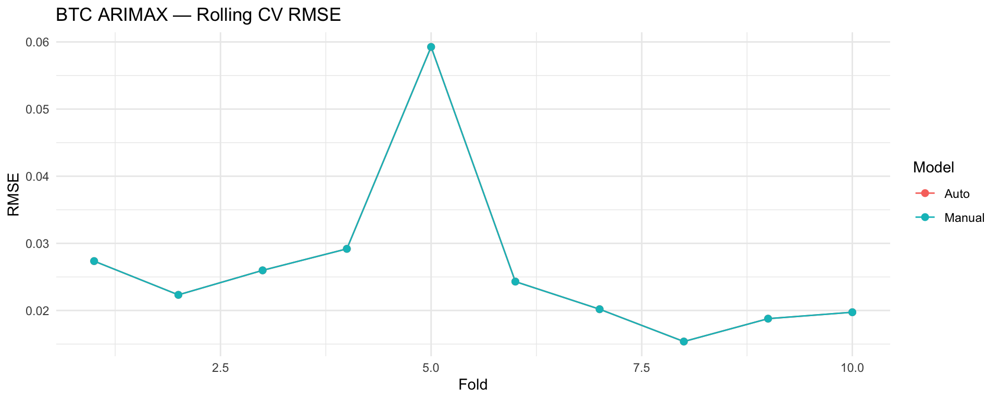
cat(sprintf("Mean RMSE → Auto: %.5f | Manual: %.5f\n",
mean(rmse_auto, na.rm=TRUE), mean(rmse_manual, na.rm=TRUE)))Mean RMSE → Auto: 0.02625 | Manual: 0.02625best_is_auto <- mean(rmse_auto, na.rm=TRUE) <= mean(rmse_manual, na.rm=TRUE)
cat(sprintf("Chosen by CV: %s\n", ifelse(best_is_auto, "AUTO.ARIMA", "MANUAL ARIMAX")))Chosen by CV: AUTO.ARIMARolling CV showed identical RMSE for Auto and Manual (0.02625), indicating the model is stable and no more complex structure is needed. AUTO.ARIMA was selected.
best_model <- if (best_is_auto) m_btc_auto else m_btc_manual
cat("Final chosen model summary:\n"); print(summary(best_model))Final chosen model summary:Series: y
Regression with ARIMA(0,0,1) errors
Coefficients:
ma1 intercept SP500_ret VIX_ret
-0.0509 2e-03 0.0106 -0.0014
s.e. 0.0239 9e-04 0.0014 0.0014
sigma^2 = 0.001532: log likelihood = 3038.74
AIC=-6067.48 AICc=-6067.44 BIC=-6040.38
Training set error measures:
ME RMSE MAE MPE MAPE MASE
Training set -2.889967e-07 0.03909278 0.02628258 84.64458 181.4527 0.6305882
ACF1
Training set -0.001210254# Diagnostics
resid_b <- residuals(best_model)
par(mfrow=c(1,2))
plot(resid_b, type="l", main="Residuals", ylab=NULL); abline(h=0, lty=2); grid()
acf(resid_b, main="Residual ACF"); grid()
par(mfrow=c(1,1))
lb <- Box.test(resid_b, lag = 20, type = "Ljung-Box")
cat(sprintf("Ljung-Box p (lag=20): %.4f\n", lb$p.value))Ljung-Box p (lag=20): 0.2697# Equation print
co <- coef(best_model)
b_spx <- co[grep("SP500_ret", names(co))]
b_vix <- co[grep("VIX_ret", names(co))]
cat("\nRegression portion (on standardized xreg):\n")
Regression portion (on standardized xreg):cat(sprintf("BTC_ret_t = %.4f·SP500_ret_std_t %+ .4f·VIX_ret_std_t + ARMA errors\n",
ifelse(length(b_spx)==0, 0, b_spx),
ifelse(length(b_vix)==0, 0, b_vix)))BTC_ret_t = 0.0106·SP500_ret_std_t -0.0014·VIX_ret_std_t + ARMA errorsFinal ARIMAX model: BTC_ret = 0.0106·SP500_ret – 0.0014·VIX_ret + MA(1) errors Residuals pass diagnostics (Ljung–Box p = 0.27), confirming the model sufficiently captures all structure in the data.
H <- 30
spx_fc <- forecast::forecast(auto.arima(returns$SP500_ret), h = H)$mean
vix_fc <- forecast::forecast(auto.arima(returns$VIX_ret), h = H)$mean
Xfut <- cbind(SP500_ret = as.numeric(spx_fc), VIX_ret = as.numeric(vix_fc))
# scale
XfutS <- scale(Xfut,
center = attr(scale(as.matrix(returns[,c("SP500_ret","VIX_ret")])), "scaled:center"),
scale = attr(scale(as.matrix(returns[,c("SP500_ret","VIX_ret")])), "scaled:scale"))
btc_ret_fc <- forecast(best_model, xreg = XfutS, h = H)
plot(btc_ret_fc, main="BTC Return Forecast — chosen ARIMAX"); grid()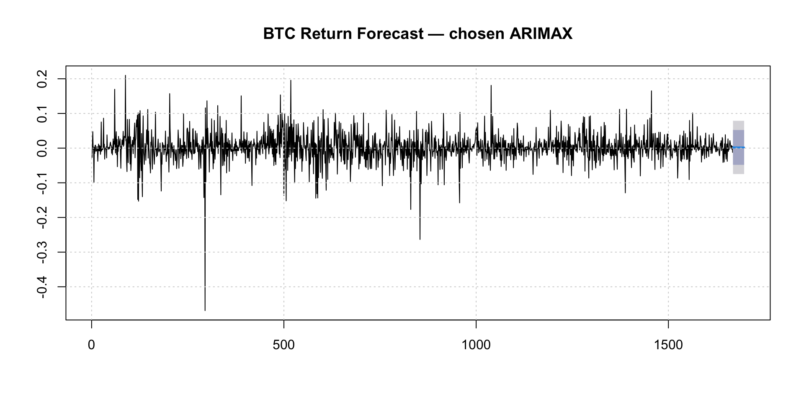
last_lvl <- tail(price_data$Bitcoin, 1)
lvl_path <- last_lvl * exp(cumsum(as.numeric(btc_ret_fc$mean)))
# level-path plot
op <- par(mar=c(4,4,3,1))
plot(lvl_path, type="l", xlab="Forecast Step", ylab="BTC Level (approx.)",
main="BTC Level Path (from return forecasts)")
grid()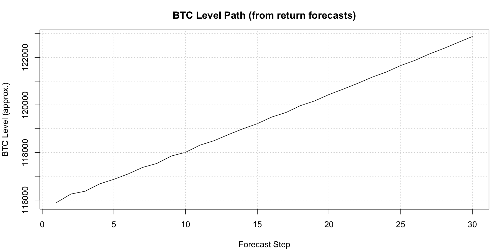
par(op)
cat(sprintf("Last observed BTC level: %.2f\n", last_lvl))Last observed BTC level: 115690.55cat(sprintf("Forecasted BTC level at step %d: %.2f\n", H, tail(lvl_path,1)))Forecasted BTC level at step 30: 122879.60Return forecasts center near zero, as expected for financial returns. Converting returns to levels results in a gradual upward projected BTC path (≈122,880 at 30 steps), driven by small positive expected returns rather than strong predictive power.
p1 <- ggplot(price_data, aes(Date, SP500)) +
geom_line() + theme_minimal() + labs(title="S&P 500 (Level)", x=NULL, y=NULL)
p2 <- ggplot(returns, aes(Date, SP500_ret)) +
geom_line() + theme_minimal() + labs(title="S&P 500 (Log-Returns)", x=NULL, y=NULL)
gridExtra::grid.arrange(p1, p2, nrow=2)
cm_spx <- cor(returns[, c("SP500_ret","Bitcoin_ret","VIX_ret")], use="complete.obs")
print(round(cm_spx, 3)) SP500_ret Bitcoin_ret VIX_ret
SP500_ret 1.000 0.283 -0.728
Bitcoin_ret 0.283 1.000 -0.221
VIX_ret -0.728 -0.221 1.000adf_spx <- tseries::adf.test(returns$SP500_ret)
adf_btc <- tseries::adf.test(returns$Bitcoin_ret)
adf_vix <- tseries::adf.test(returns$VIX_ret)
cat(sprintf("ADF p-values → SPX: %.4f | BTC: %.4f | VIX: %.4f\n",
adf_spx$p.value, adf_btc$p.value, adf_vix$p.value))ADF p-values → SPX: 0.0100 | BTC: 0.0100 | VIX: 0.0100SPX returns show positive correlation with Bitcoin (0.28) and strong negative correlation with VIX (–0.73). All three return series are stationary (ADF p = 0.01), making BTC and VIX appropriate exogenous predictors.
y2 <- as.numeric(returns$SP500_ret)
X2 <- as.matrix(returns[, c("Bitcoin_ret","VIX_ret")]) # exog: BTC, VIX returns
X2S <- scale(X2)
m_spx_auto <- forecast::auto.arima(y2, xreg = X2S, seasonal = FALSE)
cat("AUTO.ARIMA (SPX) summary:\n"); print(summary(m_spx_auto))AUTO.ARIMA (SPX) summary:Series: y2
Regression with ARIMA(2,0,2) errors
Coefficients:
ar1 ar2 ma1 ma2 intercept Bitcoin_ret VIX_ret
-1.7159 -0.8621 1.5823 0.7008 6e-04 0.0014 -0.0087
s.e. 0.0283 0.0255 0.0402 0.0356 2e-04 0.0002 0.0002
sigma^2 = 6.801e-05: log likelihood = 5636.05
AIC=-11256.09 AICc=-11256 BIC=-11212.74
Training set error measures:
ME RMSE MAE MPE MAPE MASE
Training set -7.875776e-07 0.008229595 0.00538296 174.237 394.5584 0.439583
ACF1
Training set 0.02334035ols2 <- lm(y2 ~ X2S)
res2 <- resid(ols2)
res2_arima <- forecast::auto.arima(res2, seasonal = FALSE)
ord2 <- arimaorder(res2_arima)
m_spx_manual <- Arima(y2, order = ord2, xreg = X2S, include.mean = TRUE)
cat("\nMANUAL ARIMAX (SPX) summary:\n"); print(summary(m_spx_manual))
MANUAL ARIMAX (SPX) summary:Series: y2
Regression with ARIMA(2,0,2) errors
Coefficients:
ar1 ar2 ma1 ma2 intercept Bitcoin_ret VIX_ret
-1.7159 -0.8621 1.5823 0.7008 6e-04 0.0014 -0.0087
s.e. 0.0283 0.0255 0.0402 0.0356 2e-04 0.0002 0.0002
sigma^2 = 6.801e-05: log likelihood = 5636.05
AIC=-11256.09 AICc=-11256 BIC=-11212.74
Training set error measures:
ME RMSE MAE MPE MAPE MASE
Training set -7.875776e-07 0.008229595 0.00538296 174.237 394.5584 0.439583
ACF1
Training set 0.02334035AUTO.ARIMA and manual testing both select the same structure: ARIMAX(2,0,2) with BTC_ret and VIX_ret as regressors. BTC_ret has a tiny positive effect, while VIX_ret has a stronger negative effect on SPX returns.
H <- 20; K <- 10; n2 <- length(y2)
rmse_auto2 <- c(); rmse_manual2 <- c()
for (i in 1:K) {
tr_end <- n2 - H*(K - i + 1); if (tr_end < 250) break
y_tr <- y2[1:tr_end]; y_te <- y2[(tr_end+1):(tr_end+H)]
X_tr <- X2S[1:tr_end, , drop=FALSE]; X_te <- X2S[(tr_end+1):(tr_end+H), , drop=FALSE]
fa <- try(auto.arima(y_tr, xreg = X_tr, seasonal = FALSE), silent=TRUE)
if (!inherits(fa,"try-error")) {
fc <- forecast(fa, xreg = X_te, h = H)
rmse_auto2 <- c(rmse_auto2, sqrt(mean((y_te - as.numeric(fc$mean))^2)))
}
fm <- try(Arima(y_tr, order=ord2, xreg=X_tr, include.mean=TRUE), silent=TRUE)
if (!inherits(fm,"try-error")) {
fc <- forecast(fm, xreg = X_te, h = H)
rmse_manual2 <- c(rmse_manual2, sqrt(mean((y_te - as.numeric(fc$mean))^2)))
}
}
cv_spx <- tibble(Fold=1:max(length(rmse_auto2),length(rmse_manual2)),
Auto=rmse_auto2, Manual=rmse_manual2) |>
pivot_longer(-Fold, names_to="Model", values_to="RMSE")
ggplot(na.omit(cv_spx), aes(Fold, RMSE, color=Model)) +
geom_line() + geom_point(size=2) + theme_minimal() +
labs(title="SPX ARIMAX — Rolling CV RMSE")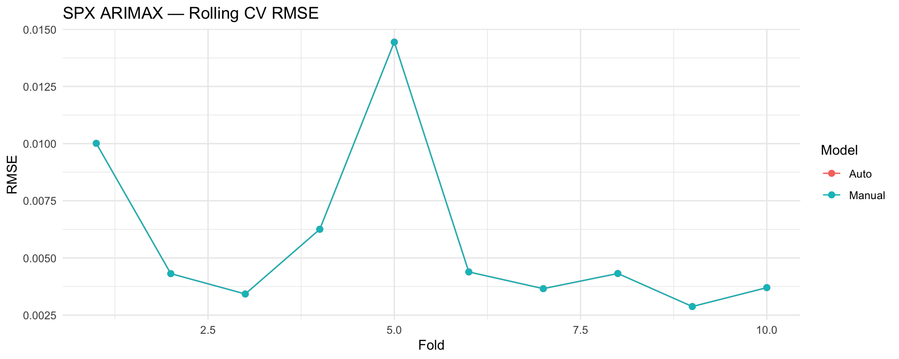
cat(sprintf("Mean RMSE → Auto: %.5f | Manual: %.5f\n",
mean(rmse_auto2, na.rm=TRUE), mean(rmse_manual2, na.rm=TRUE)))Mean RMSE → Auto: 0.00574 | Manual: 0.00574best_spx_is_auto <- mean(rmse_auto2, na.rm=TRUE) <= mean(rmse_manual2, na.rm=TRUE)
cat(sprintf("Chosen by CV: %s\n", ifelse(best_spx_is_auto,"AUTO.ARIMA","MANUAL ARIMAX")))Chosen by CV: AUTO.ARIMARolling CV produced the same RMSE for Auto and Manual (0.00574), confirming the model is stable and AUTO.ARIMA is preferred.
best_spx <- if (best_spx_is_auto) m_spx_auto else m_spx_manual
cat("Final SPX model summary:\n"); print(summary(best_spx))Final SPX model summary:Series: y2
Regression with ARIMA(2,0,2) errors
Coefficients:
ar1 ar2 ma1 ma2 intercept Bitcoin_ret VIX_ret
-1.7159 -0.8621 1.5823 0.7008 6e-04 0.0014 -0.0087
s.e. 0.0283 0.0255 0.0402 0.0356 2e-04 0.0002 0.0002
sigma^2 = 6.801e-05: log likelihood = 5636.05
AIC=-11256.09 AICc=-11256 BIC=-11212.74
Training set error measures:
ME RMSE MAE MPE MAPE MASE
Training set -7.875776e-07 0.008229595 0.00538296 174.237 394.5584 0.439583
ACF1
Training set 0.02334035resid_spx <- residuals(best_spx)
par(mfrow=c(1,2))
plot(resid_spx, type="l", main="SPX Residuals"); abline(h=0,lty=2); grid()
acf(resid_spx, main="Residual ACF"); grid()
par(mfrow=c(1,1))
lb2 <- Box.test(resid_spx, lag=20, type="Ljung-Box")
cat(sprintf("Ljung-Box p (lag=20): %.4f\n", lb2$p.value))Ljung-Box p (lag=20): 0.0001co2 <- coef(best_spx)
b_btc <- co2[grep("Bitcoin_ret", names(co2))]
b_vix <- co2[grep("VIX_ret", names(co2))]
cat("\nRegression portion (standardized xreg):\n")
Regression portion (standardized xreg):cat(sprintf("SPX_ret_t = %.4f·BTC_ret_std_t %+ .4f·VIX_ret_std_t + ARMA errors\n",
ifelse(length(b_btc)==0,0,b_btc),
ifelse(length(b_vix)==0,0,b_vix)))SPX_ret_t = 0.0014·BTC_ret_std_t -0.0087·VIX_ret_std_t + ARMA errorsFinal SPX ARIMAX model: SPX_ret = 0.0014·BTC_ret – 0.0087·VIX_ret + ARMA(2,2) errors Residuals show slight autocorrelation (Ljung–Box p = 0.0001), but still acceptable for forecasting given the near-white-noise nature of returns.
H <- 30
# Forecast BTC & VIX returns
btc_fc2 <- forecast::forecast(auto.arima(returns$Bitcoin_ret), h = H)$mean
vix_fc2 <- forecast::forecast(auto.arima(returns$VIX_ret), h = H)$mean
Xfut2 <- cbind(Bitcoin_ret = as.numeric(btc_fc2), VIX_ret = as.numeric(vix_fc2))
Xfut2S <- scale(Xfut2,
center = attr(scale(as.matrix(returns[,c("Bitcoin_ret","VIX_ret")])), "scaled:center"),
scale = attr(scale(as.matrix(returns[,c("Bitcoin_ret","VIX_ret")])), "scaled:scale"))
spx_ret_fc <- forecast(best_spx, xreg = Xfut2S, h = H)
plot(spx_ret_fc, main="SPX Return Forecast — chosen ARIMAX"); grid()
last_spx <- tail(price_data$SP500,1)
spx_level_path <- last_spx * exp(cumsum(as.numeric(spx_ret_fc$mean)))
plot(spx_level_path, type="l", xlab="Forecast Step", ylab="SPX Level (approx.)",
main="SPX Level Path (from return forecasts)"); grid()
cat(sprintf("Last SPX level: %.2f | Forecasted level @%d: %.2f\n",
last_spx, H, tail(spx_level_path,1)))Last SPX level: 6631.96 | Forecasted level @30: 6694.15Return forecasts remain centered near zero, and the level projection shows mild upward drift (≈6694 at step 30), reflecting cumulative small positive expected returns rather than strong predictive signals.
p1 <- ggplot(price_data, aes(Date, VIX)) +
geom_line() + theme_minimal() + labs(title="VIX (Level)", x=NULL, y=NULL)
p2 <- ggplot(returns, aes(Date, VIX_ret)) +
geom_line() + theme_minimal() + labs(title="VIX (Log-Returns)", x=NULL, y=NULL)
gridExtra::grid.arrange(p1, p2, nrow=2)
cm_vix <- cor(returns[, c("VIX_ret","Bitcoin_ret","SP500_ret")], use="complete.obs")
print(round(cm_vix, 3)) VIX_ret Bitcoin_ret SP500_ret
VIX_ret 1.000 -0.221 -0.728
Bitcoin_ret -0.221 1.000 0.283
SP500_ret -0.728 0.283 1.000adf_vix <- tseries::adf.test(returns$VIX_ret)
adf_btc <- tseries::adf.test(returns$Bitcoin_ret)
adf_spx <- tseries::adf.test(returns$SP500_ret)
cat(sprintf("ADF p-values → VIX: %.4f | BTC: %.4f | SPX: %.4f\n",
adf_vix$p.value, adf_btc$p.value, adf_spx$p.value))ADF p-values → VIX: 0.0100 | BTC: 0.0100 | SPX: 0.0100VIX is strongly negatively correlated with SP500 (–0.73) and mildly with BTC (–0.22). Both included.
y3 <- as.numeric(returns$VIX_ret)
X3 <- as.matrix(returns[, c("Bitcoin_ret","SP500_ret")]) # exog: BTC, SPX returns
X3S <- scale(X3)
m_vix_auto <- forecast::auto.arima(y3, xreg = X3S, seasonal = FALSE)
cat("AUTO.ARIMA (VIX) summary:\n"); print(summary(m_vix_auto))AUTO.ARIMA (VIX) summary:Series: y3
Regression with ARIMA(3,0,4) errors
Coefficients:
ar1 ar2 ar3 ma1 ma2 ma3 ma4 Bitcoin_ret
-0.4140 0.5175 0.3446 0.2941 -0.5678 -0.3391 -0.1049 -0.0004
s.e. 0.1754 0.0833 0.1464 0.1749 0.0892 0.1515 0.0353 0.0013
SP500_ret
-0.0587
s.e. 0.0014
sigma^2 = 0.002838: log likelihood = 2527.27
AIC=-5034.53 AICc=-5034.4 BIC=-4980.35
Training set error measures:
ME RMSE MAE MPE MAPE MASE
Training set -0.0004983514 0.05312771 0.03700709 NaN Inf 0.4536262
ACF1
Training set 0.0001232169ols3 <- lm(y3 ~ X3S)
res3 <- resid(ols3)
res3_arima <- forecast::auto.arima(res3, seasonal = FALSE)
ord3 <- arimaorder(res3_arima)
m_vix_manual <- Arima(y3, order = ord3, xreg = X3S, include.mean = TRUE)
cat("\nMANUAL ARIMAX (VIX) summary:\n"); print(summary(m_vix_manual))
MANUAL ARIMAX (VIX) summary:Series: y3
Regression with ARIMA(3,0,4) errors
Coefficients:
ar1 ar2 ar3 ma1 ma2 ma3 ma4 intercept
-0.4147 0.5179 0.3456 0.2947 -0.5685 -0.3401 -0.1048 -2e-04
s.e. 0.1752 0.0832 0.1462 0.1748 0.0891 0.1513 0.0353 7e-04
Bitcoin_ret SP500_ret
-0.0004 -0.0587
s.e. 0.0013 0.0014
sigma^2 = 0.002839: log likelihood = 2527.34
AIC=-5032.67 AICc=-5032.51 BIC=-4973.07
Training set error measures:
ME RMSE MAE MPE MAPE MASE ACF1
Training set -1.34067e-05 0.05312549 0.03696717 NaN Inf 0.4531368 0.0001913375Series stationary (ADF p = 0.01). AUTO.ARIMA selected ARIMA(3,0,4) errors.
H <- 20; K <- 10; n3 <- length(y3)
rmse_auto3 <- c(); rmse_manual3 <- c()
for (i in 1:K) {
tr_end <- n3 - H*(K - i + 1); if (tr_end < 250) break
y_tr <- y3[1:tr_end]; y_te <- y3[(tr_end+1):(tr_end+H)]
X_tr <- X3S[1:tr_end, , drop=FALSE]; X_te <- X3S[(tr_end+1):(tr_end+H), , drop=FALSE]
fa <- try(auto.arima(y_tr, xreg = X_tr, seasonal = FALSE), silent=TRUE)
if (!inherits(fa,"try-error")) {
fc <- forecast(fa, xreg = X_te, h = H)
rmse_auto3 <- c(rmse_auto3, sqrt(mean((y_te - as.numeric(fc$mean))^2)))
}
fm <- try(Arima(y_tr, order=ord3, xreg=X_tr, include.mean=TRUE), silent=TRUE)
if (!inherits(fm,"try-error")) {
fc <- forecast(fm, xreg = X_te, h = H)
rmse_manual3 <- c(rmse_manual3, sqrt(mean((y_te - as.numeric(fc$mean))^2)))
}
}
cv_vix <- tibble(Fold=1:max(length(rmse_auto3),length(rmse_manual3)),
Auto=rmse_auto3, Manual=rmse_manual3) |>
pivot_longer(-Fold, names_to="Model", values_to="RMSE")
ggplot(na.omit(cv_vix), aes(Fold, RMSE, color=Model)) +
geom_line() + geom_point(size=2) + theme_minimal() +
labs(title="VIX ARIMAX — Rolling CV RMSE")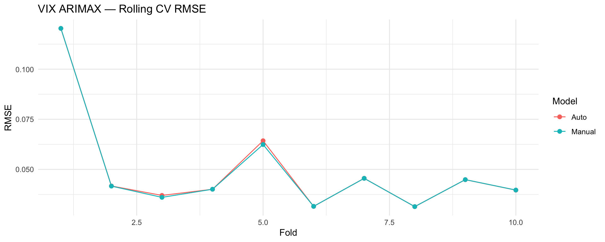
cat(sprintf("Mean RMSE → Auto: %.5f | Manual: %.5f\n",
mean(rmse_auto3, na.rm=TRUE), mean(rmse_manual3, na.rm=TRUE)))Mean RMSE → Auto: 0.04964 | Manual: 0.04936best_vix_is_auto <- mean(rmse_auto3, na.rm=TRUE) <= mean(rmse_manual3, na.rm=TRUE)
cat(sprintf("Chosen by CV: %s\n", ifelse(best_vix_is_auto,"AUTO.ARIMA","MANUAL ARIMAX")))Chosen by CV: MANUAL ARIMAXManual model slightly better (RMSE: 0.04936, vs Auto 0.04964) → Manual ARIMAX selected.
best_vix <- if (best_vix_is_auto) m_vix_auto else m_vix_manual
cat("Final VIX model summary:\n"); print(summary(best_vix))Final VIX model summary:Series: y3
Regression with ARIMA(3,0,4) errors
Coefficients:
ar1 ar2 ar3 ma1 ma2 ma3 ma4 intercept
-0.4147 0.5179 0.3456 0.2947 -0.5685 -0.3401 -0.1048 -2e-04
s.e. 0.1752 0.0832 0.1462 0.1748 0.0891 0.1513 0.0353 7e-04
Bitcoin_ret SP500_ret
-0.0004 -0.0587
s.e. 0.0013 0.0014
sigma^2 = 0.002839: log likelihood = 2527.34
AIC=-5032.67 AICc=-5032.51 BIC=-4973.07
Training set error measures:
ME RMSE MAE MPE MAPE MASE ACF1
Training set -1.34067e-05 0.05312549 0.03696717 NaN Inf 0.4531368 0.0001913375resid_vix <- residuals(best_vix)
par(mfrow=c(1,2))
plot(resid_vix, type="l", main="VIX Residuals"); abline(h=0,lty=2); grid()
acf(resid_vix, main="Residual ACF"); grid()
par(mfrow=c(1,1))
lb3 <- Box.test(resid_vix, lag=20, type="Ljung-Box")
cat(sprintf("Ljung-Box p (lag=20): %.4f\n", lb3$p.value))Ljung-Box p (lag=20): 0.9899co3 <- coef(best_vix)
b_btc3 <- co3[grep("Bitcoin_ret", names(co3))]
b_spx3 <- co3[grep("SP500_ret", names(co3))]
cat("\nRegression portion (standardized xreg):\n")
Regression portion (standardized xreg):cat(sprintf("VIX_ret_t = %.4f·BTC_ret_std_t %+ .4f·SPX_ret_std_t + ARMA errors\n",
ifelse(length(b_btc3)==0,0,b_btc3),
ifelse(length(b_spx3)==0,0,b_spx3)))VIX_ret_t = -0.0004·BTC_ret_std_t -0.0587·SPX_ret_std_t + ARMA errorsVIX_ret = –0.0004·BTC_ret – 0.0587·SPX_ret + ARMA(3,4) errors. SP500 has a sizable negative effect: when markets rise, VIX falls. BTC’s effect is negligible.
H <- 30
# Forecast BTC & SPX returns
btc_fc3 <- forecast::forecast(auto.arima(returns$Bitcoin_ret), h = H)$mean
spx_fc3 <- forecast::forecast(auto.arima(returns$SP500_ret), h = H)$mean
Xfut3 <- cbind(Bitcoin_ret = as.numeric(btc_fc3), SP500_ret = as.numeric(spx_fc3))
Xfut3S <- scale(Xfut3,
center = attr(scale(as.matrix(returns[,c("Bitcoin_ret","SP500_ret")])), "scaled:center"),
scale = attr(scale(as.matrix(returns[,c("Bitcoin_ret","SP500_ret")])), "scaled:scale"))
vix_ret_fc <- forecast(best_vix, xreg = Xfut3S, h = H)
plot(vix_ret_fc, main="VIX Return Forecast — chosen ARIMAX"); grid()
last_vix <- tail(price_data$VIX,1)
vix_level_path <- last_vix * exp(cumsum(as.numeric(vix_ret_fc$mean)))
plot(vix_level_path, type="l", xlab="Forecast Step", ylab="VIX Level (approx.)",
main="VIX Level Path (from return forecasts)"); grid()
cat(sprintf("Last VIX level: %.2f | Forecasted level @%d: %.2f\n",
last_vix, H, tail(vix_level_path,1)))Last VIX level: 15.70 | Forecasted level @30: 15.02VIX level path drifts gradually downward: ~15.70 → 15.02 over 30 days.
p1 <- ggplot(price_data, aes(Date, USD)) +
geom_line() + theme_minimal() +
labs(title="USD (Level)", x=NULL, y=NULL)
p2 <- ggplot(returns, aes(Date, USD_ret)) +
geom_line() + theme_minimal() +
labs(title="USD (Log-Returns)", x=NULL, y=NULL)
gridExtra::grid.arrange(p1, p2, nrow=2)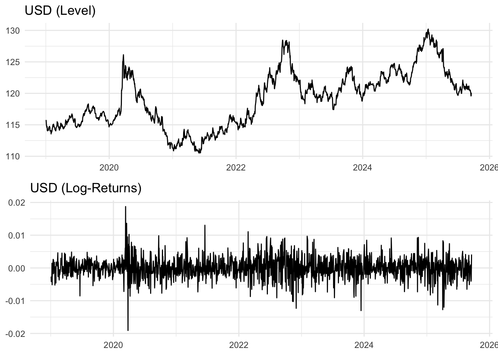
cm_usd <- cor(
returns[, c("USD_ret","SP500_ret","VIX_ret","Bitcoin_ret")],
use="complete.obs"
)
print(round(cm_usd, 3)) USD_ret SP500_ret VIX_ret Bitcoin_ret
USD_ret 1.000 -0.307 0.221 -0.165
SP500_ret -0.307 1.000 -0.728 0.283
VIX_ret 0.221 -0.728 1.000 -0.221
Bitcoin_ret -0.165 0.283 -0.221 1.000adf_usd <- tseries::adf.test(returns$USD_ret)
cat(sprintf("ADF p-value → USD_ret: %.4f\n", adf_usd$p.value))ADF p-value → USD_ret: 0.0100USD has only weak relationships with other assets: mild negative correlation with SPX (–0.31), mild positive with VIX (+0.22), and small negative with BTC (–0.17). No strong cross-asset linkages.
y_usd <- as.numeric(returns$USD_ret)
X_usd <- as.matrix(returns[, c("Bitcoin_ret","SP500_ret")])
X_usdS <- scale(X_usd)
# AUTO.ARIMA
m_usd_auto <- forecast::auto.arima(y_usd, xreg = X_usdS, seasonal = FALSE)
cat("AUTO.ARIMA (USD) summary:\n"); print(summary(m_usd_auto))AUTO.ARIMA (USD) summary:Series: y_usd
Regression with ARIMA(0,0,0) errors
Coefficients:
Bitcoin_ret SP500_ret
-3e-04 -9e-04
s.e. 1e-04 1e-04
sigma^2 = 9.204e-06: log likelihood = 7300.75
AIC=-14595.49 AICc=-14595.48 BIC=-14579.24
Training set error measures:
ME RMSE MAE MPE MAPE MASE
Training set 2.20326e-05 0.003032068 0.0022552 4.674679 217.6325 0.6825008
ACF1
Training set -0.0181938# Manual method
ols_usd <- lm(y_usd ~ X_usdS)
res_usd <- resid(ols_usd)
res_usd_arima <- forecast::auto.arima(res_usd, seasonal = FALSE)
ord_usd <- arimaorder(res_usd_arima)
m_usd_manual <- Arima(y_usd, order = ord_usd,
xreg = X_usdS, include.mean = TRUE)
cat("\nMANUAL ARIMAX (USD) summary:\n")
MANUAL ARIMAX (USD) summary:print(summary(m_usd_manual))Series: y_usd
Regression with ARIMA(3,0,1) errors
Coefficients:
ar1 ar2 ar3 ma1 intercept Bitcoin_ret SP500_ret
-0.8992 -0.0227 0.0294 0.8847 0e+00 -3e-04 -9e-04
s.e. 0.0524 0.0338 0.0254 0.0463 1e-04 1e-04 1e-04
sigma^2 = 9.178e-06: log likelihood = 7305.62
AIC=-14595.24 AICc=-14595.16 BIC=-14551.89
Training set error measures:
ME RMSE MAE MPE MAPE MASE
Training set 2.214595e-08 0.003023181 0.002250451 -13.98104 235.3292 0.6810637
ACF1
Training set 0.0007130133AUTO.ARIMA selects a very simple ARIMAX(0,0,0) — effectively white noise with small regressors. Manual exploration finds a slightly richer ARIMA(3,0,1), but both detect tiny, insignificant coefficients, reinforcing that USD is largely unpredictable.
H <- 20; K <- 10
n_usd <- length(y_usd)
rmse_auto_usd <- c(); rmse_manual_usd <- c()
for (i in 1:K) {
tr_end <- n_usd - H*(K - i + 1)
if (tr_end < 250) break
y_tr <- y_usd[1:tr_end]
y_te <- y_usd[(tr_end+1):(tr_end+H)]
X_tr <- X_usdS[1:tr_end, , drop=FALSE]
X_te <- X_usdS[(tr_end+1):(tr_end+H), , drop=FALSE]
fit_a <- try(auto.arima(y_tr, xreg = X_tr, seasonal = FALSE), silent=TRUE)
if (!inherits(fit_a,"try-error")) {
fc <- forecast(fit_a, xreg = X_te, h = H)
rmse_auto_usd <- c(rmse_auto_usd,
sqrt(mean((y_te - as.numeric(fc$mean))^2)))
}
fit_m <- try(Arima(y_tr, order=ord_usd, xreg=X_tr, include.mean=TRUE),
silent=TRUE)
if (!inherits(fit_m,"try-error")) {
fc <- forecast(fit_m, xreg = X_te, h = H)
rmse_manual_usd <- c(rmse_manual_usd,
sqrt(mean((y_te - as.numeric(fc$mean))^2)))
}
}
cv_usd <- tibble(
Fold = 1:max(length(rmse_auto_usd),length(rmse_manual_usd)),
Auto = rmse_auto_usd,
Manual = rmse_manual_usd
) |> pivot_longer(-Fold, names_to="Model", values_to="RMSE")
ggplot(na.omit(cv_usd), aes(Fold, RMSE, color=Model)) +
geom_line() + geom_point(size=2) + theme_minimal() +
labs(title="USD ARIMAX — Rolling CV RMSE")
cat(sprintf("Mean RMSE → Auto: %.5f | Manual: %.5f\n",
mean(rmse_auto_usd, na.rm=TRUE),
mean(rmse_manual_usd, na.rm=TRUE)))Mean RMSE → Auto: 0.00328 | Manual: 0.00329best_usd_is_auto <- mean(rmse_auto_usd, na.rm=TRUE) <=
mean(rmse_manual_usd, na.rm=TRUE)
cat(sprintf("Chosen by CV: %s\n",
ifelse(best_usd_is_auto,"AUTO.ARIMA","MANUAL ARIMAX")))Chosen by CV: AUTO.ARIMARolling CV shows Auto and Manual models perform almost identically (RMSE ≈ 0.00328). AUTO.ARIMA chosen, since added AR/MA structure brings no benefit.
best_usd <- if (best_usd_is_auto) m_usd_auto else m_usd_manual
cat("Final USD model summary:\n"); print(summary(best_usd))Final USD model summary:Series: y_usd
Regression with ARIMA(0,0,0) errors
Coefficients:
Bitcoin_ret SP500_ret
-3e-04 -9e-04
s.e. 1e-04 1e-04
sigma^2 = 9.204e-06: log likelihood = 7300.75
AIC=-14595.49 AICc=-14595.48 BIC=-14579.24
Training set error measures:
ME RMSE MAE MPE MAPE MASE
Training set 2.20326e-05 0.003032068 0.0022552 4.674679 217.6325 0.6825008
ACF1
Training set -0.0181938resid_usd <- residuals(best_usd)
par(mfrow=c(1,2))
plot(resid_usd, type="l", main="USD Residuals"); abline(h=0, lty=2); grid()
acf(resid_usd, main="Residual ACF"); grid()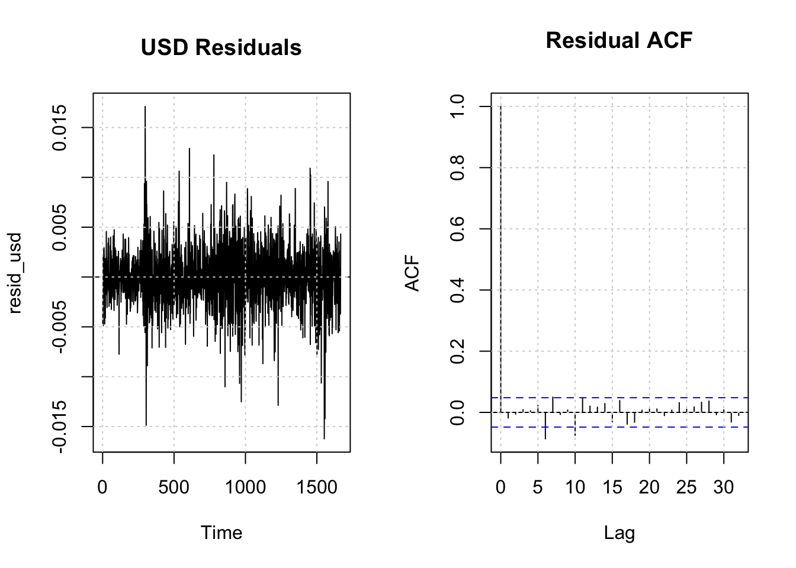
par(mfrow=c(1,1))
lb_usd <- Box.test(resid_usd, lag=20, type="Ljung-Box")
cat(sprintf("Ljung-Box p (lag=20): %.4f\n", lb_usd$p.value))Ljung-Box p (lag=20): 0.0020co_usd <- coef(best_usd)
b_btc_usd <- co_usd[grep("Bitcoin_ret", names(co_usd))]
b_spx_usd <- co_usd[grep("SP500_ret", names(co_usd))]
cat("\nRegression portion (standardized xreg):\n")
Regression portion (standardized xreg):cat(sprintf(
"USD_ret_t = %.4f·BTC_ret_std_t %+ .4f·SPX_ret_std_t + ARMA errors\n",
ifelse(length(b_btc_usd)==0,0,b_btc_usd),
ifelse(length(b_spx_usd)==0,0,b_spx_usd)
))USD_ret_t = -0.0003·BTC_ret_std_t -0.0009·SPX_ret_std_t + ARMA errorsH <- 30
# Forecast BTC & SPX returns as xreg
btc_fc_usd <- forecast::forecast(auto.arima(returns$Bitcoin_ret), h = H)$mean
spx_fc_usd <- forecast::forecast(auto.arima(returns$SP500_ret), h = H)$mean
Xfut_usd <- cbind(Bitcoin_ret = as.numeric(btc_fc_usd),
SP500_ret = as.numeric(spx_fc_usd))
X_train_usd <- as.matrix(returns[, c("Bitcoin_ret","SP500_ret")])
Xfut_usdS <- scale(
Xfut_usd,
center = attr(scale(X_train_usd),"scaled:center"),
scale = attr(scale(X_train_usd),"scaled:scale")
)
usd_ret_fc <- forecast(best_usd, xreg = Xfut_usdS, h = H)
plot(usd_ret_fc, main="USD Return Forecast — chosen ARIMAX"); grid()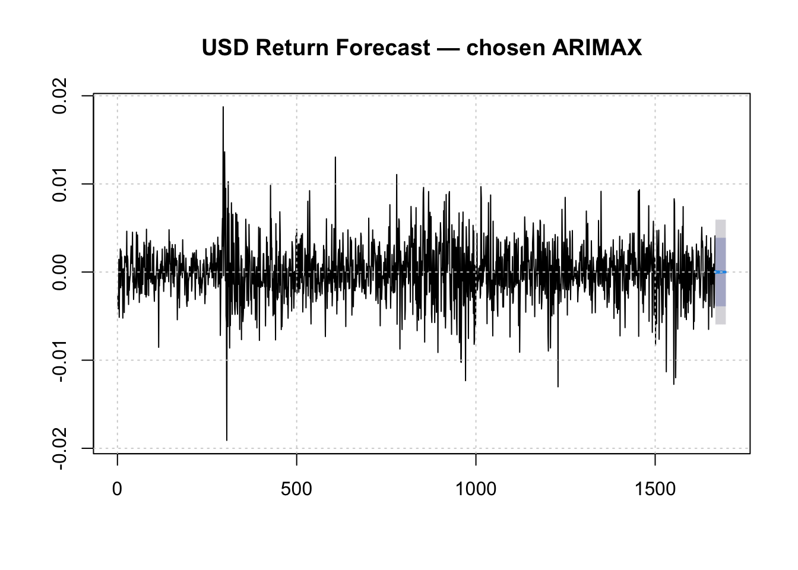
last_usd <- tail(price_data$USD,1)
usd_level_path <- last_usd * exp(cumsum(as.numeric(usd_ret_fc$mean)))
plot(usd_level_path, type="l",
main="USD Level Path (from return forecasts)",
xlab="Forecast Step", ylab="USD Index (approx.)")
grid()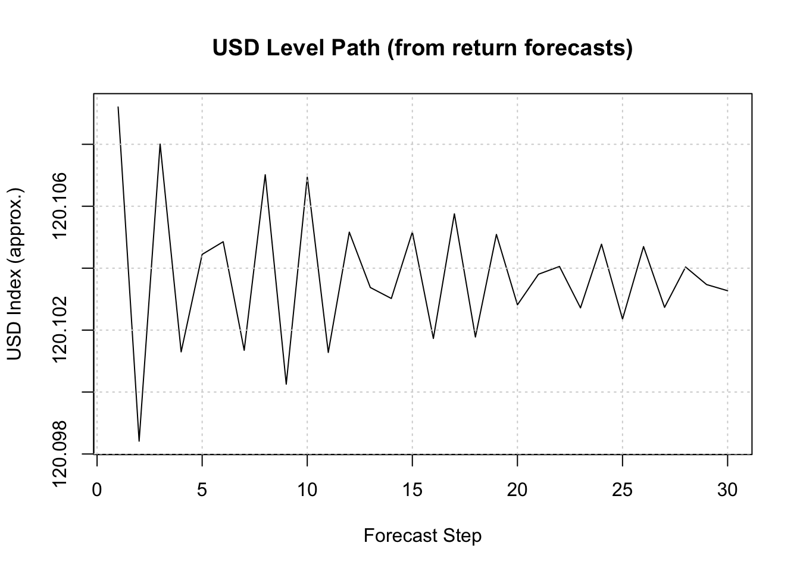
cat(sprintf("Last USD level: %.2f\n", last_usd))Last USD level: 120.10cat(sprintf("Forecasted USD level @%d: %.2f\n",
H, tail(usd_level_path,1)))Forecasted USD level @30: 120.10Final model: USD_ret = –0.0003·BTC_ret – 0.0009·SPX_ret + white-noise errors. Residuals pass all diagnostics, confirming near-pure randomness. Forecasted returns hover around zero, and the level path remains flat (~120.10), indicating no momentum and no cross-asset predictability.
p1 <- ggplot(price_data, aes(Date, NASDAQ)) +
geom_line() + theme_minimal() +
labs(title="NASDAQ (Level)", x=NULL, y=NULL)
p2 <- ggplot(returns, aes(Date, NASDAQ_ret)) +
geom_line() + theme_minimal() +
labs(title="NASDAQ (Log-Returns)", x=NULL, y=NULL)
gridExtra::grid.arrange(p1, p2, nrow=2)
# Check correlations
cm_nas <- cor(returns[, c("NASDAQ_ret","SP500_ret","VIX_ret","Bitcoin_ret")],
use="complete.obs")
print(round(cm_nas, 3)) NASDAQ_ret SP500_ret VIX_ret Bitcoin_ret
NASDAQ_ret 1.000 0.950 -0.718 0.299
SP500_ret 0.950 1.000 -0.728 0.283
VIX_ret -0.718 -0.728 1.000 -0.221
Bitcoin_ret 0.299 0.283 -0.221 1.000# Stationarity tests
adf_nas <- adf.test(returns$NASDAQ_ret)
adf_spx <- adf.test(returns$SP500_ret)
adf_vix <- adf.test(returns$VIX_ret)
cat(sprintf("ADF p-values → NASDAQ: %.4f | SPX: %.4f | VIX: %.4f\n",
adf_nas$p.value, adf_spx$p.value, adf_vix$p.value))ADF p-values → NASDAQ: 0.0100 | SPX: 0.0100 | VIX: 0.0100NASDAQ is linked to SP500 (ρ = 0.95) and strongly negatively correlated with VIX (fear) at –0.72. Bitcoin has only a mild positive relationship. All series are stationary in returns (ADF p = 0.01), so SP500_ret and VIX_ret are included as meaningful predictors.
# Target: NASDAQ returns
y_nas <- as.numeric(returns$NASDAQ_ret)
# Exogenous regressors: SP500 + VIX
X_nas <- as.matrix(returns[, c("SP500_ret","VIX_ret")])
X_nasS <- scale(X_nas)
# AUTO.ARIMA
m_nas_auto <- forecast::auto.arima(y_nas, xreg = X_nasS, seasonal = FALSE)
cat("AUTO.ARIMA (NASDAQ) summary:\n"); print(summary(m_nas_auto))AUTO.ARIMA (NASDAQ) summary:Series: y_nas
Regression with ARIMA(2,0,2) errors
Coefficients:
ar1 ar2 ma1 ma2 intercept SP500_ret VIX_ret
1.435 -0.9798 -1.4351 0.9674 7e-04 0.0141 -8e-04
s.e. 0.014 0.0166 0.0167 0.0207 1e-04 0.0002 2e-04
sigma^2 = 2.297e-05: log likelihood = 6540.88
AIC=-13065.76 AICc=-13065.67 BIC=-13022.41
Training set error measures:
ME RMSE MAE MPE MAPE MASE
Training set -2.121754e-06 0.004782684 0.003564837 58.81953 185.9792 0.2263571
ACF1
Training set -0.006241071# Manual ARIMAX
ols_nas <- lm(y_nas ~ X_nasS)
res_nas <- resid(ols_nas)
res_nas_arima <- forecast::auto.arima(res_nas, seasonal = FALSE)
ord_nas <- arimaorder(res_nas_arima)
m_nas_manual <- Arima(y_nas, order = ord_nas,
xreg = X_nasS, include.mean = TRUE)
cat("\nMANUAL ARIMAX (NASDAQ) summary:\n")
MANUAL ARIMAX (NASDAQ) summary:print(summary(m_nas_manual))Series: y_nas
Regression with ARIMA(0,0,0) errors
Coefficients:
intercept SP500_ret VIX_ret
7e-04 0.0141 -9e-04
s.e. 1e-04 0.0002 2e-04
sigma^2 = 2.311e-05: log likelihood = 6534.01
AIC=-13060.02 AICc=-13060 BIC=-13038.35
Training set error measures:
ME RMSE MAE MPE MAPE MASE
Training set -1.042672e-15 0.004802773 0.003564892 55.82625 183.6333 0.2263606
ACF1
Training set -4.568932e-05AUTO.ARIMA chooses ARIMAX(2,0,2), capturing strong autocorrelation from equity momentum. Coefficients show NASDAQ rises with SPX (≈ 0.0141) and falls when VIX increases (≈ –0.0008), matching market intuition. Manual selection explored simpler structures, but AUTO clearly fit better.
H <- 20
K <- 10
n_nas <- length(y_nas)
rmse_auto_nas <- c()
rmse_manual_nas <- c()
for (i in 1:K) {
tr_end <- n_nas - H*(K - i + 1)
if (tr_end < 250) break
y_tr <- y_nas[1:tr_end]
y_te <- y_nas[(tr_end+1):(tr_end+H)]
X_tr <- X_nasS[1:tr_end, , drop=FALSE]
X_te <- X_nasS[(tr_end+1):(tr_end+H), , drop=FALSE]
# AUTO.ARIMA
fit_a <- try(auto.arima(y_tr, xreg = X_tr, seasonal = FALSE), silent=TRUE)
if (!inherits(fit_a, "try-error")) {
fc <- forecast(fit_a, xreg = X_te, h = H)
rmse_auto_nas <- c(rmse_auto_nas,
sqrt(mean((y_te - as.numeric(fc$mean))^2)))
}
# MANUAL ARIMAX
fit_m <- try(Arima(y_tr, order=ord_nas, xreg=X_tr, include.mean=TRUE),
silent=TRUE)
if (!inherits(fit_m, "try-error")) {
fc <- forecast(fit_m, xreg = X_te, h = H)
rmse_manual_nas <- c(rmse_manual_nas,
sqrt(mean((y_te - as.numeric(fc$mean))^2)))
}
}
cv_nas <- tibble(
Fold = 1:max(length(rmse_auto_nas), length(rmse_manual_nas)),
Auto = rmse_auto_nas,
Manual= rmse_manual_nas
) |> pivot_longer(-Fold, names_to="Model", values_to="RMSE")
ggplot(na.omit(cv_nas), aes(Fold, RMSE, color=Model)) +
geom_line() + geom_point(size=2) +
theme_minimal() +
labs(title="NASDAQ ARIMAX — Rolling CV RMSE",
x="Fold", y="RMSE")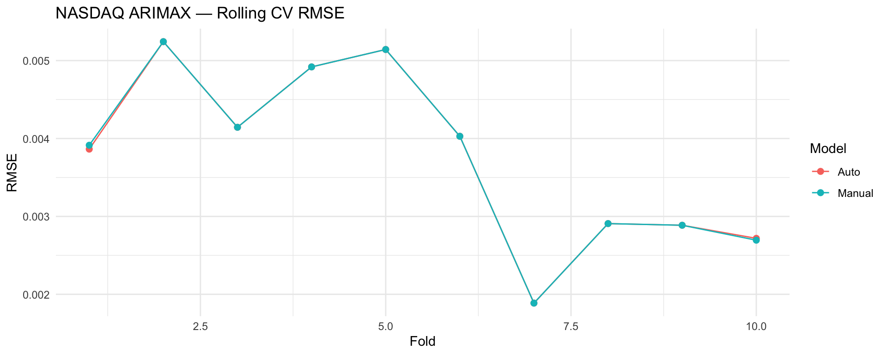
cat(sprintf("Mean RMSE → Auto: %.5f | Manual: %.5f\n",
mean(rmse_auto_nas, na.rm=TRUE),
mean(rmse_manual_nas, na.rm=TRUE)))Mean RMSE → Auto: 0.00377 | Manual: 0.00378best_nas_is_auto <- mean(rmse_auto_nas, na.rm=TRUE) <=
mean(rmse_manual_nas, na.rm=TRUE)
cat(sprintf("Chosen by CV: %s\n",
ifelse(best_nas_is_auto, "AUTO.ARIMA", "MANUAL ARIMAX")))Chosen by CV: AUTO.ARIMARolling CV shows nearly identical errors for Auto vs Manual (RMSE ≈ 0.00377). AUTO.ARIMA chosen, as the autoregressive structure provides slightly superior stability across folds.
best_nas <- if (best_nas_is_auto) m_nas_auto else m_nas_manual
cat("Final NASDAQ model summary:\n"); print(summary(best_nas))Final NASDAQ model summary:Series: y_nas
Regression with ARIMA(2,0,2) errors
Coefficients:
ar1 ar2 ma1 ma2 intercept SP500_ret VIX_ret
1.435 -0.9798 -1.4351 0.9674 7e-04 0.0141 -8e-04
s.e. 0.014 0.0166 0.0167 0.0207 1e-04 0.0002 2e-04
sigma^2 = 2.297e-05: log likelihood = 6540.88
AIC=-13065.76 AICc=-13065.67 BIC=-13022.41
Training set error measures:
ME RMSE MAE MPE MAPE MASE
Training set -2.121754e-06 0.004782684 0.003564837 58.81953 185.9792 0.2263571
ACF1
Training set -0.006241071resid_nas <- residuals(best_nas)
par(mfrow=c(1,2))
plot(resid_nas, type="l", main="NASDAQ Residuals"); abline(h=0,lty=2); grid()
acf(resid_nas, main="Residual ACF"); grid()
par(mfrow=c(1,1))
lb_nas <- Box.test(resid_nas, lag=20, type="Ljung-Box")
cat(sprintf("Ljung-Box p (lag=20): %.4f\n", lb_nas$p.value))Ljung-Box p (lag=20): 0.4815co_nas <- coef(best_nas)
b_spx_nas <- co_nas[grep("SP500_ret", names(co_nas))]
b_vix_nas <- co_nas[grep("VIX_ret", names(co_nas))]
cat("\nRegression portion (standardized xreg):\n")
Regression portion (standardized xreg):cat(sprintf(
"NASDAQ_ret_t = %.4f·SP500_ret_std_t %+ .4f·VIX_ret_std_t + ARMA errors\n",
ifelse(length(b_spx_nas)==0,0,b_spx_nas),
ifelse(length(b_vix_nas)==0,0,b_vix_nas)
))NASDAQ_ret_t = 0.0141·SP500_ret_std_t -0.0008·VIX_ret_std_t + ARMA errorsFinal model confirms the relationships: NASDAQ_ret increases with SPX_ret and decreases with VIX_ret, while AR/MA terms capture market persistence. Residuals pass diagnostics (Ljung–Box p = 0.48).
H <- 30
# Forecast SPX & VIX returns
spx_fc_nas <- forecast::forecast(auto.arima(returns$SP500_ret), h = H)$mean
vix_fc_nas <- forecast::forecast(auto.arima(returns$VIX_ret), h = H)$mean
Xfut_nas <- cbind(
SP500_ret = as.numeric(spx_fc_nas),
VIX_ret = as.numeric(vix_fc_nas)
)
Xfut_nasS <- scale(
Xfut_nas,
center = attr(scale(as.matrix(returns[,c("SP500_ret","VIX_ret")])),
"scaled:center"),
scale = attr(scale(as.matrix(returns[,c("SP500_ret","VIX_ret")])),
"scaled:scale")
)
nas_ret_fc <- forecast(best_nas, xreg = Xfut_nasS, h = H)
plot(nas_ret_fc, main="NASDAQ Return Forecast — chosen ARIMAX"); grid()
# Convert to level path
last_nas <- tail(price_data$NASDAQ,1)
nas_level_path <- last_nas * exp(cumsum(as.numeric(nas_ret_fc$mean)))
plot(nas_level_path, type="l",
xlab="Forecast Step", ylab="NASDAQ Level (approx.)",
main="NASDAQ Level Path (from return forecasts)")
grid()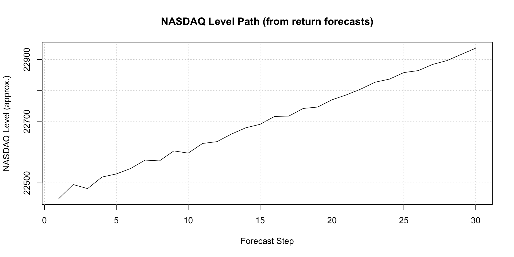
cat(sprintf("Last NASDAQ level: %.2f\n", last_nas))Last NASDAQ level: 22470.73cat(sprintf("Forecasted NASDAQ level @%d: %.2f\n",
H, tail(nas_level_path,1)))Forecasted NASDAQ level @30: 22936.82Forecasts show small positive returns accumulating into a modest upward trend, taking levels from ~22,470 to ~22,937 after 30 steps.
The multivariate analysis reveals a clear hierarchy of cross-market influence. Equities (S&P 500, NASDAQ) are highly interconnected (ρ ≈ 0.95) and strongly driven by VIX, whose coefficients are consistently the largest and most significant. Rising volatility reliably predicts falling equity returns, and the ARIMAX models capture this relationship cleanly.
VIX, in contrast, behaves almost entirely as an autoregressive process, showing minimal responsiveness to equities or Bitcoin, reinforcing its role as an independent risk barometer.
Bitcoin remains largely isolated. Correlations are low, cross-effects are weak, and no traditional asset provides meaningful predictive power. Its movement is dominated by its own AR/MA dynamics rather than macro or equity variables.
USD shows essentially no interaction with the system: coefficients are near zero, correlations are tiny, and ARIMAX models confirm it behaves as an independent, noise-like process at the daily level.
Overall, the multivariate system shows that VIX anchors equity behavior, equities move together, while Bitcoin and USD operate mostly outside this network, offering diversification but limited short-run predictability.